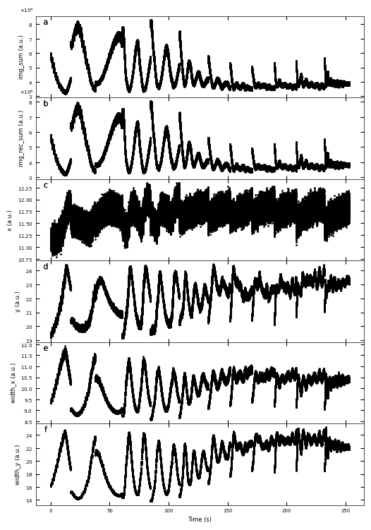
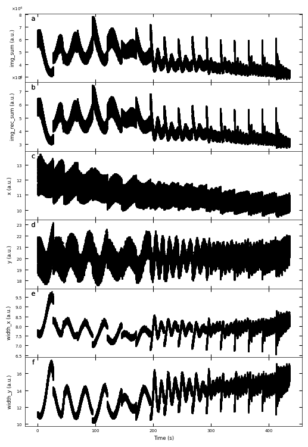

RHEED Metrics#
%load_ext autoreload
%autoreload 2
import numpy as np
import matplotlib.pyplot as plt
import sys
sys.path.append('../../src/')
from m3_learning.nn.random import random_seed
from m3_learning.viz.style import set_style
from m3_learning.viz.printing import printer
from m3_learning.RHEED.Dataset import RHEED_spot_Dataset, RHEED_parameter_dataset
set_style("printing")
random_seed(seed=42)
2023-06-08 13:23:46.148981: I tensorflow/core/platform/cpu_feature_guard.cc:193] This TensorFlow binary is optimized with oneAPI Deep Neural Network Library (oneDNN) to use the following CPU instructions in performance-critical operations: AVX2 FMA
To enable them in other operations, rebuild TensorFlow with the appropriate compiler flags.
2023-06-08 13:23:46.709350: W tensorflow/compiler/xla/stream_executor/platform/default/dso_loader.cc:64] Could not load dynamic library 'libnvinfer.so.7'; dlerror: libnvinfer.so.7: cannot open shared object file: No such file or directory; LD_LIBRARY_PATH: /home/ferroelectric/micromamba/envs/m3-RHEED/lib/python3.10/site-packages/cv2/../../lib64:/home/ferroelectric/micromamba/envs/m3-RHEED/lib/python3.10/site-packages/cv2/../../lib64:
2023-06-08 13:23:46.709407: W tensorflow/compiler/xla/stream_executor/platform/default/dso_loader.cc:64] Could not load dynamic library 'libnvinfer_plugin.so.7'; dlerror: libnvinfer_plugin.so.7: cannot open shared object file: No such file or directory; LD_LIBRARY_PATH: /home/ferroelectric/micromamba/envs/m3-RHEED/lib/python3.10/site-packages/cv2/../../lib64:/home/ferroelectric/micromamba/envs/m3-RHEED/lib/python3.10/site-packages/cv2/../../lib64:
2023-06-08 13:23:46.709411: W tensorflow/compiler/tf2tensorrt/utils/py_utils.cc:38] TF-TRT Warning: Cannot dlopen some TensorRT libraries. If you would like to use Nvidia GPU with TensorRT, please make sure the missing libraries mentioned above are installed properly.
printing set for seaborn
Pytorch seed was set to 42
Numpy seed was set to 42
tensorflow seed was set to 42
1. Sample treated_213nm#
Loading the Dataset#
path = './Datasets/STO_STO_test6_06292022-standard.h5'
D1_spot = RHEED_spot_Dataset(path, sample_name='treated_213nm')
D1_spot.viz_RHEED_spot(growth='growth_2', index=0, figsize=(2,4))
Fig. a: RHEED spot image for growth_2 at index 0.
Information of Gaussian fit parameters dataset#
path = './Datasets/test6_gaussian_fit_parameters_all-04232023.h5'
D1_para = RHEED_parameter_dataset(path, camera_freq=500, sample_name='treated_213nm')
D1_para.viz_RHEED_parameter(growth='growth_2', spot='spot_2', index=10000)
Fig. a: RHEED spot image, b: reconstructed RHEED spot image, c: difference between original and reconstructed image for growth_2 at index 10000.
img_sum=61247.00, img_max=87.00, img_mean=44.00
img_rec_sum=59368.68, img_rec_max=72.97, img_rec_mean=42.65
height=72.98, x=15.40, y=20.73, width_x=10.33, width_y_max=20.36
Plot of Gaussian fit parameters#
growth_list = ['growth_1', 'growth_2', 'growth_3', 'growth_4', 'growth_5', 'growth_6',
'growth_7', 'growth_8', 'growth_9', 'growth_10', 'growth_11', 'growth_12']
D1_para.viz_RHEED_parameter_trend(growth_list, spot='spot_2', head_tail=(100,500), interval=200)
/home/ferroelectric/micromamba/envs/m3-RHEED/lib/python3.10/site-packages/m3_learning/RHEED/Dataset.py:414: UserWarning: FixedFormatter should only be used together with FixedLocator
ax.set_xticklabels(['' for tick in ax.get_xticks()])
Gaussian fitted parameters in time: Fig. a: sum of original image, b: sum of reconstructed image, c: spot center in spot x coordinate, d: spot center in y coordinate, e: spot width in x coordinate, f: spot width in y coordinate.
2. Sample treated_81nm#
Loading the Dataset#
path = './Datasets/STO_STO_test7_06292022-standard.h5'
D2_spot = RHEED_spot_Dataset(path, sample_name='treated_81nm')
D2_spot.viz_RHEED_spot(growth='growth_2', index=10, figsize=(2,3))
Fig. a: RHEED spot image for growth_2 at index 10.
Information of Gaussian fit parameters dataset#
path = './Datasets/test7_gaussian_fit_parameters_all-04232023.h5'
D2_para = RHEED_parameter_dataset(path, camera_freq=500, sample_name='treated_81nm')
D2_para.viz_RHEED_parameter(growth='growth_2', spot='spot_2', index=10000)
Fig. a: RHEED spot image, b: reconstructed RHEED spot image, c: difference between original and reconstructed image for growth_2 at index 10000.
img_sum=35031.00, img_max=58.00, img_mean=39.81
img_rec_sum=34451.97, img_rec_max=52.63, img_rec_mean=39.15
height=52.64, x=11.50, y=22.16, width_x=11.22, width_y_max=22.80
Plot of Gaussian fit parameters#
growth_list = ['growth_1', 'growth_2', 'growth_3', 'growth_4', 'growth_5', 'growth_6', 'growth_7', 'growth_8', 'growth_9', 'growth_10', 'growth_11', 'growth_12']
D2_para.viz_RHEED_parameter_trend(growth_list, spot='spot_2')

Gaussian fitted parameters in time: Fig. a: sum of original image, b: sum of reconstructed image, c: spot center in spot x coordinate, d: spot center in y coordinate, e: spot width in x coordinate, f: spot width in y coordinate.
3. Sample untreated_162nm#
Loading the Dataset#
path = './Datasets/STO_STO_test9_07142022-standard.h5'
D3_spot = RHEED_spot_Dataset(path, sample_name='untreated_162nm')
D3_spot.viz_RHEED_spot(growth='growth_2', index=0, figsize=(2,4))
Fig. a: RHEED spot image for growth_2 at index 0.

Information of Gaussian fit parameters dataset#
path = './Datasets/test9_gaussian_fit_parameters_all-04232023.h5'
D3_para = RHEED_parameter_dataset(path, camera_freq=500, sample_name='untreated_162nm')
D3_para.viz_RHEED_parameter(growth='growth_2', spot='spot_2', index=100)
Fig. a: RHEED spot image, b: reconstructed RHEED spot image, c: difference between original and reconstructed image for growth_2 at index 100.
img_sum=45893.00, img_max=114.00, img_mean=60.39
img_rec_sum=44505.52, img_rec_max=101.14, img_rec_mean=58.56
height=101.29, x=10.95, y=19.21, width_x=8.27, width_y_max=13.94
Plot of Gaussian fit parameters#
growth_list = ['growth_1', 'growth_2', 'growth_3', 'growth_4', 'growth_5', 'growth_6', 'growth_7', 'growth_8', 'growth_9',
'growth_10', 'growth_11', 'growth_12' , 'growth_13', 'growth_14', 'growth_15', 'growth_16', 'growth_17', 'growth_18']
D3_para.viz_RHEED_parameter_trend(growth_list, spot='spot_2')

Gaussian fitted parameters in time: Fig. a: sum of original image, b: sum of reconstructed image, c: spot center in spot x coordinate, d: spot center in y coordinate, e: spot width in x coordinate, f: spot width in y coordinate.